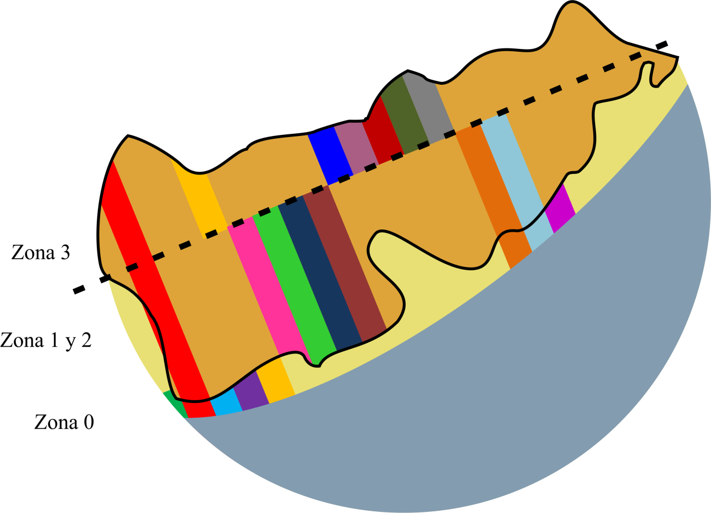

El Estero de Punta Banda visto desde un punto de vista científico
El Estero de Punta Banda es uno de los principales humedales costeros de la costa occidental de Baja California. Un humedal es una zona de transición de un ecosistema acuático a uno terrestre. Dicha ubicación le permite ser hogar de numerosas plantas y animales. Algunas especies están catalogadas como en peligro de extinción de acuerdo a la normatividad mexicana. Otras utilizan este humedal como parada dentro de sus rutas migratorias de invierno o verano. (ProEsteros, s.f.)
Un caso de estudio es un proceso de exploración acerca de una situación compleja u objeto que extiende tanto la experiencia como el conocimiento del sujeto de estudio. (Sue Soy, 1997)
Una metodologia a seguir para un caso de estudio ambiental es el siguiente:
- Identificar el sujeto del caso de estudio e investigar sobre dicho para tener una mejor idea del qué se pretende descubrir información.
- Encontrar todas las variables pertinentes al tema, resaltando conceptos importantes y recopilando términos técnicos.
- Resaltar cuál es el objetivo del estudio. ¿A qué se quiere llegar con los resultados?
- Plantear una hipótesis que tome en cuenta las variables identificadas.
- Definir uno o varios procedimientos (experimentos) a llevar a cabo para intentar generar resultados pertinentes.
- Realizar los experimentos, catalogando los resultados lo más explícitamente posible. Nunca está de más tener más datos de los necesarios.
- Procesar los datos, utilizando fórmulas, ecuaciones, gráficas, hasta dibujos, con tal de encontrar correlaciones entre las variables y su impacto en el estudio.
- Evaluar los hallazgos y dar una conclusción acerca del estudio. Contestar el cómo se respondió a la pregunta y qué tan acertada fue la hipótesis.
A continuación se presentan hallazgos encontrados por estudiantes de CETYS Universidad campus Tijuana que formaron parte de la generación 2013 de Bachillerato Interacional.
Caso de estudio: Calidad de agua en el Estero de Punta Banda
Temperatura (del agua)
Los metabolismos de las especies marinas están ligadas a la temperatura del agua de su ecosistema, por tanto, la temperatura del agua es una medición de la calidad de vida de sus habitatnes.
Se registró una temperatura promedio de 21.175° C en el epilimnion del estero de Punta Banda. La temperatura en esta zona suele estar entre los 20 y los 30° C (Water on the Web, 2008). Es óptima para el desarrollo de la diatomea, un productor primario en este ecosistema.
pH (potencial de Hidrógeno)
En el caso de un ecosistema marino, indica el nivel de agua dulce del ecosistema.
El pH registrado fue de 8.13. Se considera que está dentro del rango óptimo de 6.5 a 8.2 en la escala de pH.
Oxígeno disuelto
Parámetro vital para la mayoría de los organismos que viven en el agua.
Las concentraciones más bajas de oxígeno disuelto están en la cabeza del estero (“Estero de Punta Banda: Perfil del Humedal”, s.f.). En el estudio, se registró una concentración de oxígeno disuelto de 4.87 partes por millón. Esto es suficiente para que sobrevivan especies animales como los peces, pero no son óptimas para su desarrollo. El mínimo adecuado para esto es una concentración de 6 partes por millón.
Turbidez
Turbidez es el grado en el cual el agua pierde su transparencia debido a partículas disueltas en suspensión.
Se registraron 20 unidades de turbidez Jackson en esta prueba. Esto quiere decir que el agua de la muestra es bastante turbia, ya sea debido a que existe en ella una enorme nube de plancton, o aguas fangosas o flujos crecientes de tormentas invernales en ríos. Las pruebas de temperatura y pH también sugieren que existen muchos microorganismos en la cabeza del estero.
Caso de estudio: Caracterización vegetal en el Estero de Punta Banda
Especies características del ecosistema
El estero es desde 2006 una reserva natural según la convención de Ramsar, y por ello se han tomado acciones para cuidar a las especies que viven ahí. Esto es evidente. Solo en este breve estudio se halló un total de 18 especies, las cuales aparecieron muchas veces a través del ecosistema.
Escala DAFOR
La escala DAFOR es una manera de medir que tan abundante es una especie relativa al área de estudio. Sus siglas, en orden:
- D: Dominante
- A: Abundante
- F: Frecuente
- O: Ocasional
- R: Rara
Estrategias de supervivencia son r cuando su reproducción es rápida y abundante y k cuando el período de gestáción es más lenta y hay menos crías por camada.
Todas las especies observadas son estrategas r, por sus características de reproducción rápida y presencia en las etapas de colonización en la sucesión ecológica.
Los estrategas r han predominado en el estero por su capacidad de reproducción acelerada, lo cual significa que hasta el momento estas especies no han alcanzado la capacidad de carga del ecosistema, ya que a pesar de su reproducción masiva, como en el caso del Carpobrotus edulis, siguen contando con los nutrientes necesarios para poder seguir reproduciéndose.
Zonación vegetal
La marea juega un papel importante en la zonación, porque la marea determina lo que es la gradiente ambiental, que es el cambio gradual de los factores abióticos en un ecosistema.
Como se ve en el último mapa, la distribución de las especies a través del ecosistema genera un patrón de zonación horizontal.


Caso de estudio: Índice de diversidad del área de las dunas dentro del Estero de Punta Banda
En 2012, la diversidad del área de las dunas en el Estero de Punta Banda es de 3.3125 de acuerdo al índice recíproco de Simpson.
El Carpobrotus edulis ocupa un 37% del total de 653 organismos hallados en el área. Siendo ésta la única especie invasora dentro de las que se hallaron, se ve que predomina en la zona. El hecho de que la población de Carpobrotus edulis sea tan grande a comparación con otras poblaciones en el área estudiada sí repercute en la diversidad de la misma. Sin embargo, no sólo es a causa de la gran población del Carpobrotus edulis, pero también de la gran población de Juncus acutus y Applopapus venetus, las cuales son especies nativas de la zona. Nótese que el Carpobrotus edulis presenta muchos más organismos a comparación del
Hielanthus niveus. Si sus poblaciones fueran más equitativas entonces el índice de diversidad sería mayor.